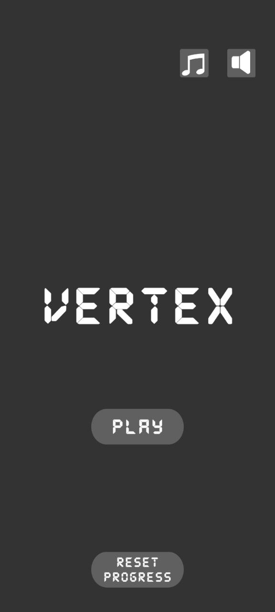
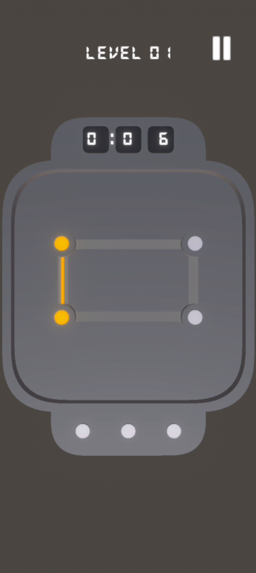
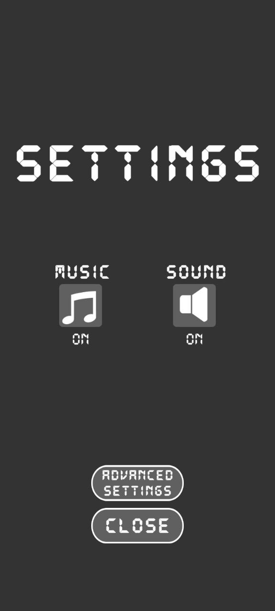
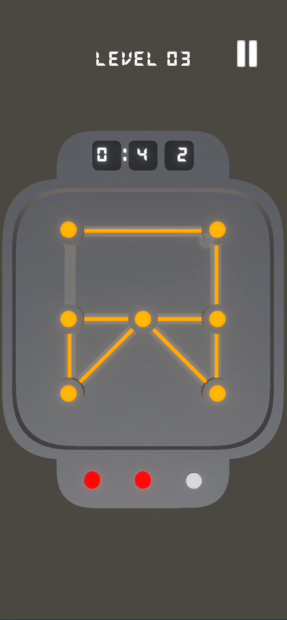
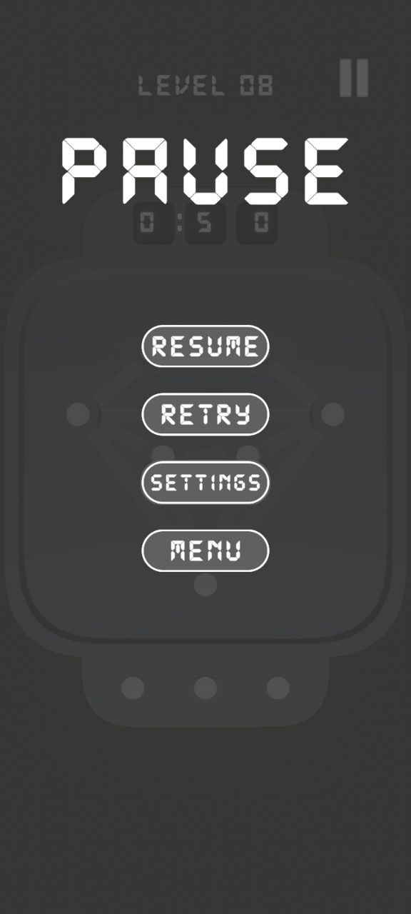

Genre
Logic Puzzle
Engine
Unity 2021.3 LTS
Language
C#
Platform
Android
Project Type
Logic puzzle system project
Complexity
Medium / High
Focus
Puzzle Logic / LineRenderer / Timer / UI
Overview
Vertex Puzzle is a mobile logic puzzle game where the player connects vertices with lines, fills all available paths and completes each level before the timer runs out.
The core rule is that the same path cannot be used twice, while vertices can still be reused when they have valid unused connections.
The project focuses on custom puzzle logic, route planning, visual feedback, LineRenderer-based drawing and a readable mobile UI for level progress, pause and settings flow.
What I Implemented
- Custom vertex system with configurable connection paths
- Path generation logic between vertices
- Line drawing system using Unity LineRenderer
- Validation logic that prevents repeated path usage
- Timer system that limits the time for each level
- Progress saving and reset functionality
- Music and sound controls with saved settings
- Menu, gameplay, pause, settings and progress screens
- Custom level objects and Android build preparation
Technical Case Study
Technical decisions
- Built custom vertex / path data so levels can define valid connections clearly
- Used LineRenderer for visual path drawing and immediate player feedback
- Separated validation logic from UI flow to keep puzzle rules easier to maintain
What problems I solved
- Prevented repeated path usage while keeping the drawing interaction responsive
- Handled timer pressure, level completion and reset flow for mobile puzzle sessions
- Made the visual feedback readable enough for quick decision-making on smaller screens
Result
- Playable mobile logic puzzle with custom path validation and level progress
- Shows ability to build non-trivial gameplay rules beyond simple movement mechanics
- Demonstrates LineRenderer usage, state validation and UI feedback in Unity
Project Links
Gameplay Media




